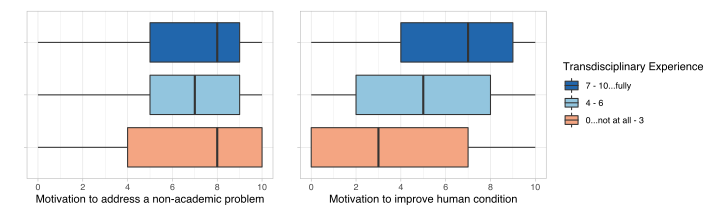
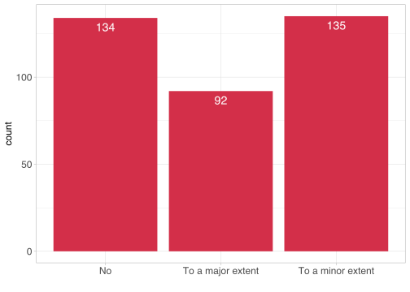
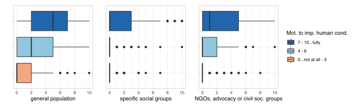
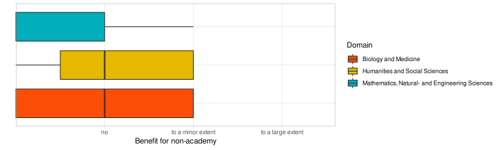
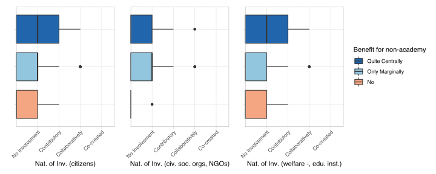
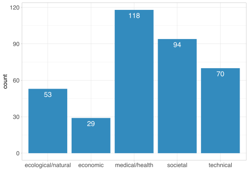
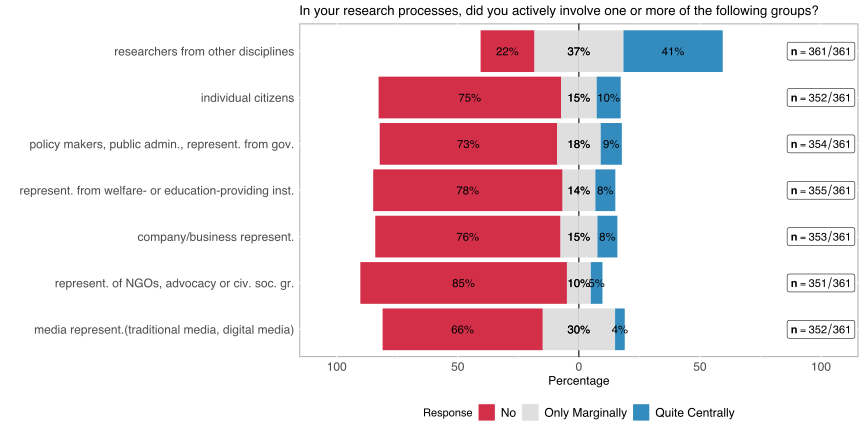
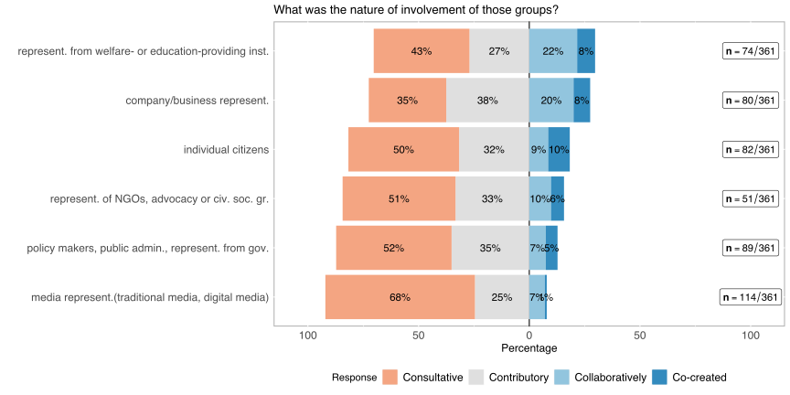
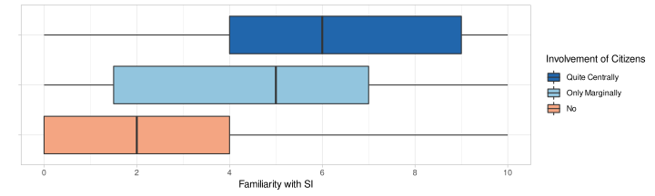
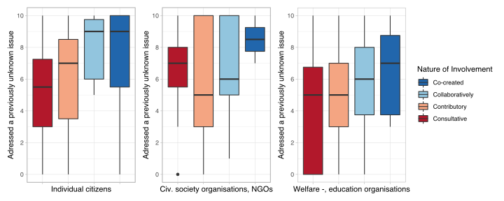

19_hypotheses
Familiarity with SI and Transdisciplinarity

A1: Experience with transdisciplinary Research
46% of the respondents note their high level of transdisciplinary experience.
We assume transdisciplinary experience often correlates with getting motivated by goals that are not purely academic. This definition includes motivation to directly address a natural, technical, economic, or social problem? and to improve the human condition/welfare.
## [1] 0.3266561## [1] 0.01175996## Warning: Removed 5 rows containing non-finite values (stat_boxplot).## Warning: Removed 6 rows containing non-finite values (stat_boxplot).
B1: Distribution of SI-Familiarity
 > TODO: Description of B1
> TODO: Description of B1
Dependence of SI-familiarity on scientific domains
The majority of the respondents indicated their low familiarity with SI, approximately %32 of the respondents selected the lowest level of SI-Familiarity (indicated with 0) and only %16 percent of the respondents selected a value equal or greater than 7.
One of the literature-driven assumptions about the SI-familiarity was that [H] the SI-Familiarity depends on the scientific domain. The hypothesis is motivated by the wide-spread perspective especially on the SSH fields to be more aware of the SI aspect in research.
The results of the study shows a statistically significant difference between the 3 main scientific domains in terms of SI-Familiarity (Kruskal-Wallis [K-W] rank sum test p-value < 0.05). However, as Figure @ref(type:B1-boxplot) also visualises the domains Mathematics, Natural-, & Engineering Sciences and Biology & Medicine are statistically not significantly different from each other while Social Sciences and Humanities (SSH) show a stat. significant difference to both of the other domains 1.
## Scale for 'fill' is already present. Adding another scale for 'fill', which
## will replace the existing scale.## Warning: Removed 1 rows containing non-finite values (stat_boxplot).
Intention & Agency
D1: Motivation

## Warning in cor.test.default(as.numeric(d1.welfare_rec),
## feat_df.num$impactTargetGroup.civsoc., : Cannot compute exact p-value with ties##
## Spearman's rank correlation rho
##
## data: as.numeric(d1.welfare_rec) and feat_df.num$impactTargetGroup.civsoc.
## S = 4545122, p-value = 1.73e-09
## alternative hypothesis: true rho is not equal to 0
## sample estimates:
## rho
## 0.3182547## Scale for 'fill' is already present. Adding another scale for 'fill', which
## will replace the existing scale.
## Scale for 'fill' is already present. Adding another scale for 'fill', which
## will replace the existing scale.
## Scale for 'fill' is already present. Adding another scale for 'fill', which
## will replace the existing scale.## Warning: Removed 5 rows containing non-finite values (stat_boxplot).## Warning: Removed 13 rows containing non-finite values (stat_boxplot).## Warning: Removed 7 rows containing non-finite values (stat_boxplot).
D2: Intention & Agency – Impulses from the Non-academic World
Addressing a specific problem …
Our hypotheses derived from the literature research includes 2 main assumptions:
- (h_1) The rate of non-academic impulse for research differs between scientific fields.
## Scale for 'fill' is already present. Adding another scale for 'fill', which
## will replace the existing scale.## Warning: Removed 1 rows containing non-finite values (stat_boxplot).
The deliberative approach to benefit for non-academic society shows statistically significant difference between different domains (Kruskal-Wallis Test p-value < 0.05), however while there is a stat. significant difference between SSH and Physical Sciences as well as between Bology & Medicine and Physical Sciences, there is no stat. difference between SSH and Biology & Medicine.
- (h_2) Impulses from non-academic world correlates with the nature of involvement of societal actors in the project.
The nature of involvement of specific groups indicate how far the involvement of those were in the project (for a detailed analysis of the variable see Nature of Involvement under Actors & Networks), including the options No, To a minor extent and To a major extent.
## [1] "" "" "" "cons" "" "" "" "" ""
## [10] "" "" "" "" "" "" "" "" "cocr"
## [19] "" "" "" "" "" "" "" "" ""
## [28] "" "colla" "" "cons" "contr" "" "" "" "cons"
## [37] "" "" "cons" "" "" "" "" "" ""
## [46] "cocr" "" "" "" "" "" "" "contr" ""
## [55] "colla" "contr" "" "" "colla" "" "" "" "contr"
## [64] "" "cons" "" "" "cons" "" "" "" ""
## [73] "" "" "" "contr" "" "" "" "" ""
## [82] "" "" "" "" "" "cons" "" "" "contr"
## [91] "" "" "" "" "" "" "cons" "contr" ""
## [100] "" "" "" "" "" "" "cons" "cons" "contr"
## [109] "" "" "" "cons" "" "cons" "" "cons" ""
## [118] "" "cocr" "cons" "" "" "" "" "" ""
## [127] "" "cocr" "" "" "" "" "" "" ""
## [136] "" "" "cons" "" "" "" "cons" "" ""
## [145] "cons" "" "" "" "" "" "cons" "" ""
## [154] "" "" "" "" "" "" "" "" ""
## [163] "" "" "" "cons" "" "" "" "" ""
## [172] "contr" "" "" "" "" "" "" "" ""
## [181] "" "cons" "" "" "" "" "cons" "" ""
## [190] "" "" "cons" "" "cons" "" "" "" ""
## [199] "" "contr" "" "" "" "" "" "contr" ""
## [208] "cons" "" "" "" "" "" "contr" "colla" ""
## [217] "" "" "" "" "" "" "" "contr" ""
## [226] "" "" "cons" "colla" "contr" "cons" "cons" "" ""
## [235] "" "" "cons" "" "" "contr" "" "contr" ""
## [244] "" "" "" "cons" "" "cocr" "cons" "" ""
## [253] "contr" "" "" "cons" "contr" "" "cons" "" "contr"
## [262] "cons" "" "" "" "" "" "" "contr" ""
## [271] "" "cons" "" "" "" "" "" "cocr" ""
## [280] "" "" "cons" "" "" "" "" "" "contr"
## [289] "" "" "" "" "" "" "" "" ""
## [298] "" "" "" "" "contr" "" "" "" ""
## [307] "" "" "" "" "cons" "" "" "" ""
## [316] "" "" "" "colla" "" "" "" "" "cons"
## [325] "" "" "cons" "" "" "" "cons" "" ""
## [334] "" "" "contr" "cocr" "contr" "" "" "contr" ""
## [343] "" "cons" "" "cons" "" "" "" "" ""
## [352] "" "" "" "" "" "colla" "cocr" "contr" ""
## [361] ""## Scale for 'fill' is already present. Adding another scale for 'fill', which
## will replace the existing scale.
## Scale for 'fill' is already present. Adding another scale for 'fill', which
## will replace the existing scale.
## Scale for 'fill' is already present. Adding another scale for 'fill', which
## will replace the existing scale.
## Warning in cor.test.default(as.numeric(d2domain.df$benefitForNonAcademy), :
## Cannot compute exact p-value with ties##
## Spearman's rank correlation rho
##
## data: as.numeric(d2domain.df$benefitForNonAcademy) and d2domain.df$civsoc
## S = 20911, p-value = 0.7077
## alternative hypothesis: true rho is not equal to 0
## sample estimates:
## rho
## 0.05380716Directly aiming to benefit society expected to correlate relatively higher with the level of participation of the societal actors. However according to the survey results the correlation between the nature of involvement of the citizens as well as civil society organisations and the deliberation to benefit society is very weak (spearman’s \(\rho\) ~0.15 and ~0.05 respectively). The correlation between the welfare organisations & NGOs with the same deliberative motivation is the only statistically significant one, however also this relation is a weak positive correlation (spearman’s \(\rho\) ~0.3).
D3: Direct benefit for the general population or a specific non-academic group

Actors & Networks
E1/E2: Transdisciplinary Aspects: Inter-/Transdisciplinary Involvement

Interdisciplinary involvement is more common among the SNF funded projects, 41% of the respondents note that the involvement of academicians from other disciplines were quite central to their specific project. Transdisciplinary involvement has been measured under different categories that indicate different type of societal actors and groups in the survey. Although not as central as the interdisciplinary involvement different types of transdisciplinary engagement constitute a noteworthy part of the research projects.
- similar across different groups in terms of extent and depth of involvement (marginal / central)

- Transdisciplinary involvement mostly consultative or contributory in nature.
- Collaborative processes more likely in projects where welfare-/education providing institutions or company/ business representatives are relevant
## Warning in cor.test.default(he_df$V1, he_df$V2, method = "spearman", use =
## "complete.obs"): Cannot compute exact p-value with ties##
## Spearman's rank correlation rho
##
## data: he_df$V1 and he_df$V2
## S = 4652968, p-value = 3.338e-12
## alternative hypothesis: true rho is not equal to 0
## sample estimates:
## rho
## 0.3598867- There is a although relatively weak (~0.35) statistically significant positive correlation between SI-Familiarity and involvement of citizens in the research project.
## Scale for 'fill' is already present. Adding another scale for 'fill', which
## will replace the existing scale.## Warning: Removed 1 rows containing non-finite values (stat_boxplot).
The type of involvement of the societal actors is also important to analyse the SI-relevant characteristics of the projects. Transdisciplinary approaches are often applied to capitalize on the ability of multiplicity of non-academic actors to address a specific issue. Therefore; we expect with the higher levels of involvement of societal actors a transdisciplinary project to,
H_1: explore issues previously not (widely) known in society, and secondly, H_2: also aim to design/offer an up-/out-/deep-scalable solution.
## Scale for 'fill' is already present. Adding another scale for 'fill', which
## will replace the existing scale.
## Scale for 'fill' is already present. Adding another scale for 'fill', which
## will replace the existing scale.
## Scale for 'fill' is already present. Adding another scale for 'fill', which
## will replace the existing scale.
## Warning in cor.test.default(as.numeric(e2domain.df$welfare),
## e2domain.df$unknown, : Cannot compute exact p-value with ties##
## Spearman's rank correlation rho
##
## data: as.numeric(e2domain.df$welfare) and e2domain.df$unknown
## S = 28807, p-value = 0.06437
## alternative hypothesis: true rho is not equal to 0
## sample estimates:
## rho
## 0.238323Notes
- Considering most of the variables are not normally distributed non parametric tests are returning statistically more robust outcomes.
Results of the pairwise comparisons using Wilcoxon rank sum test with continuity correction with Bonferonni p-value adjustment yields a p-value greater than 0.05 for Mathematics, Natural-, & Engineering Sciences. SSH, however, associated with p-values significantly smaller than 0.05 with both of the other domains↩︎